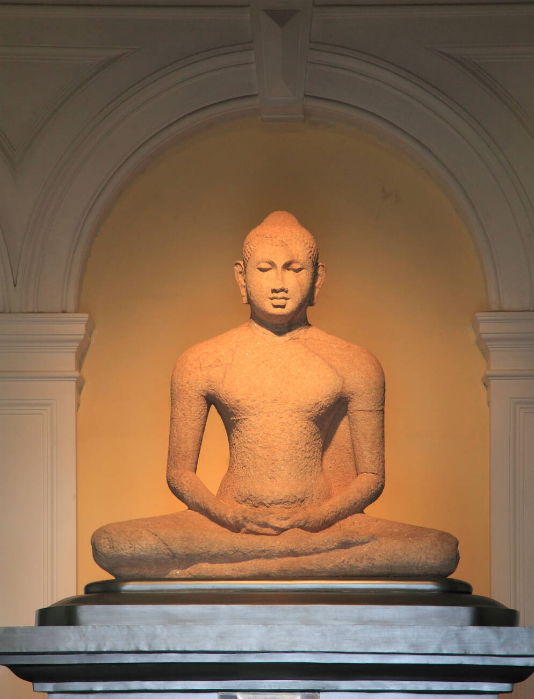
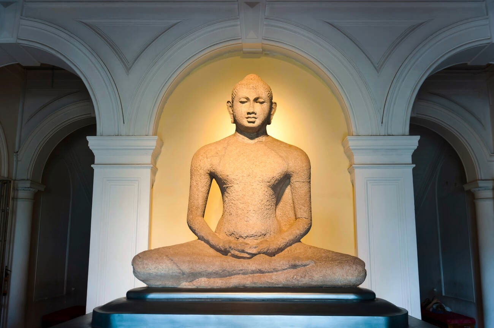
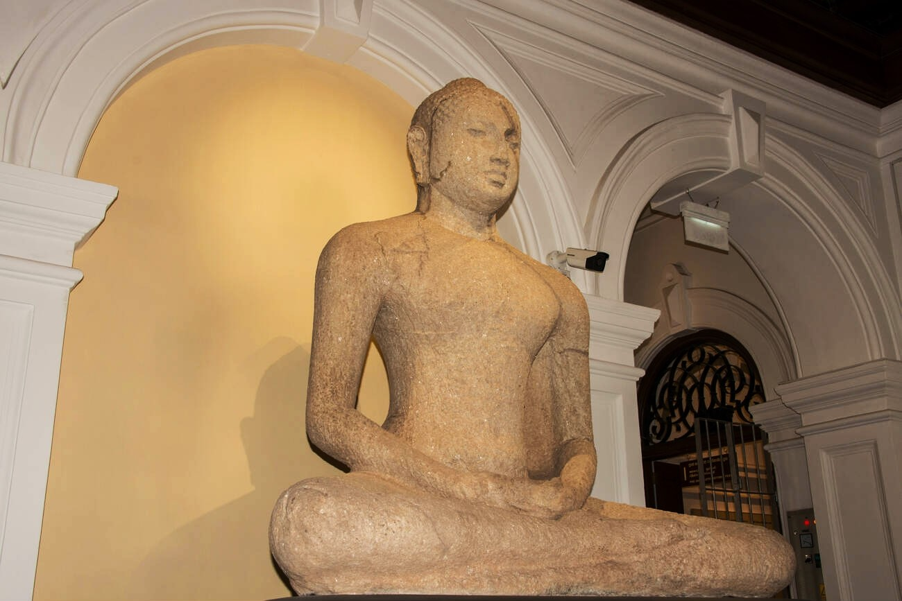
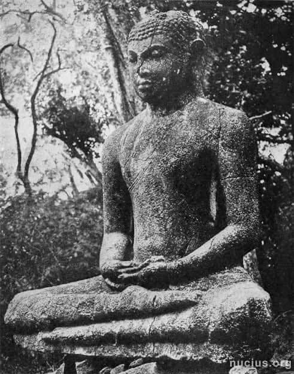
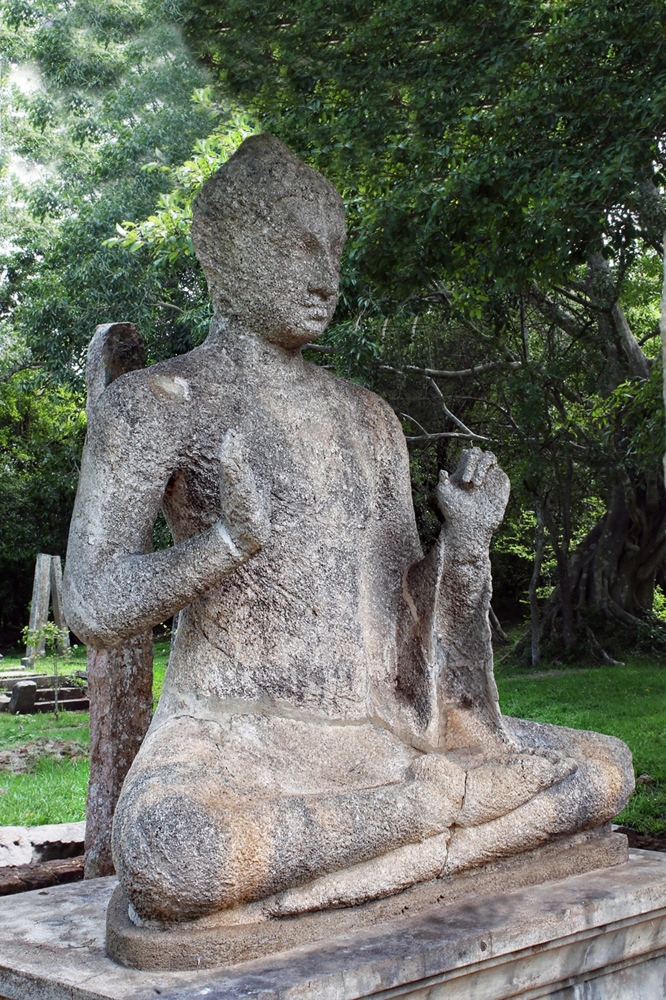
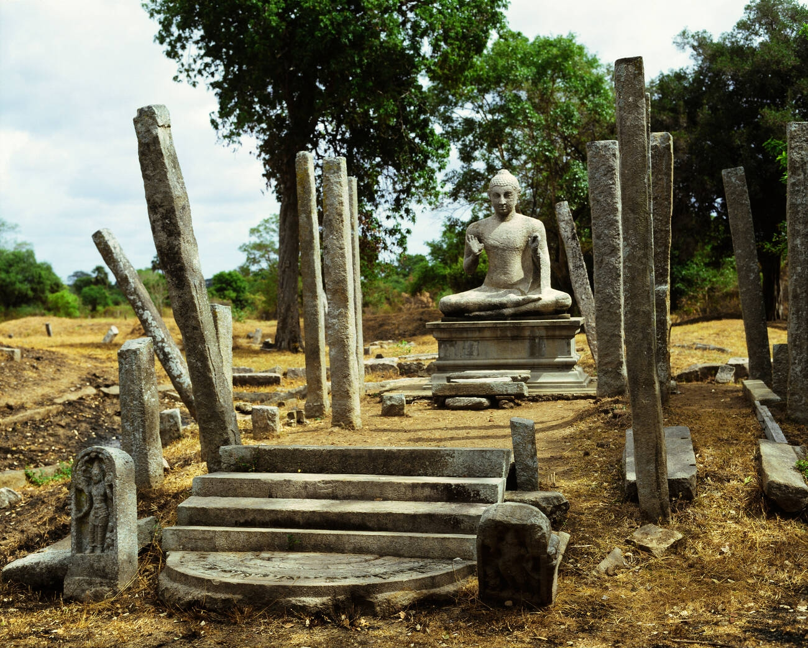

සමාධි බුදු පිළිමය
- අනුරාධපුරයේ අභයගිරි විහාර සංකීර්ණයට අයත් මහමෙව්නා උයනේ දක්නට ලැබෙන (කුට්ටම් පොකුණට නුදුරුව දක්නට ඇති) සමාධි පිළිමය, ශ්රී ලංකාවේ බුදු පිළිම අතර අතිවිශිෂ්ට නිර්මාණයකි.
- බුදු පිළිමයක තිබිය යුතු අධ්යාත්මික ශක්තිය හා සමාධී ගුණය මැනවින් පිළිබිඹු වන නිර්මාණයකි.
- ලඹසවන්, අඩවන් නෙත් හා මුහුණේ පිළිබිඹු වන උපශාන්ත බව හා මහාකරුණාව මෙම පිළිමයේ දැකිය හැකි සුවිශේෂ ලක්ෂණ වේ.
- මෙම ප්රතිමාව අනුරාධපුර යුගයේ ක්රි.ව. 4-5 වන සියවසට පමණ අයත් සේ සැලකේ.
- නෙළීමේ ශිල්ප ක්රමයට කරන ලද බුදු පිළිමයකි. එය පූර්ණ වශයෙන් මතුකර තිබේ.
- මෙම ශෛලමය පිළිමයේ ඒකාංශ චීවරය, රැළි රහිත වන අතර ඇඟට ඇළුණු ස්වභාවයෙන් නිරූපිත ය.
- බුදු පිළිමයේ අක්බමරු කේෂ කලාපය මත මඳ වශයෙන් උෂ්ණීෂය දක්වා ඇත.
- ධ්යාන මුද්රාවෙන් හා වීරාසන ක්රමයෙන් යුත් පිළිමයකි.
- බුදු පිළිමයේ කලා ලක්ෂණ අනුව ඉන්දීය ගුප්ත කලා සම්ප්රදායේ ආභාසය පෙන්වයි.
තොලූවිල බුදු පිළිමය
- අනුරාධපුර තොලූවිලින් සොයාගැනීම නිසා මෙම පිළිමය "තොලූවිල පිළිමය" නමින් හැඳින්වේ.
- අනුරාධපුර යුගයේ ක්රි. ව. 7 වැනි සියවස පමණ කාලයට අයත් ලෙස සැලකේ.
- නෙළීමේ ශිල්ප ක්රමයට නිර්මාණය කරන ලද ශෛලමය ප්රතිමාවකි, මෙය පූර්ණව මතු කර ඇත.
- ධ්යාන මුද්රාව හා වීරාසන ක්රමයෙන් වැඩ සිටියි.
- ඉතා සුන්දර ප්රසන්න උපශාන්ත ස්වභාවයක් පිළිබිඹු කරන මෙම පිළිමය උසස් භාව ප්රකාශනයෙන් ද යුක්ත ය.
- ලඹසවන්, අඩවන් නෙත් මෙම පිළිමයේ දැකිය හැකි සුවිශේෂ ලක්ෂණ වේ.
- ඒකාංශ චීවරය, රැළි රහිත වන අතර ඇඟට ඇළුණු ස්වභාවයක් නිරූපිත ය.
- බුදු පිළිමයේ අක්බමරු කේෂ කලාපය මත මඳ වශයෙන් උෂ්ණීෂය දක්වා ඇත.
- ගුප්ත සම්ප්රදායේ ලක්ෂණ මෙම ප්රතිමාවෙන් ප්රකටවන බව විද්වතුන්ගේ මතය වී තිබේ.
- මෙම පිළිමය කොළඹ කෞතුකාගාරයේ ප්රදර්ශනය කෙරේ.




අවුකන බුදු පිළිමය
- අනුරාධපුර යුගයට අයත් මෙම ප්රතිමාව හිටි බුද්ධ ප්රතිමා අතර සුවිශේෂ නිර්මාණයක් වශයෙන් සැලකේ.
- කලාවැව අසල අවුකන ග්රාමයේ පිහිටි කළුගල් පර්වතයක අධි උන්නතව හා ආබද්ධව නෙළා ඇත.
- පද්මාසනයක් මත සමභංග ඉරියව්වෙන් වැඩ හිඳින අයුරින් නෙළා ඇත.
- දකුණතින් අභය මුද්රාව දැක්වෙන අතර වම් අත සිවුරු රැල්ල දරා සිටින අයුරින් දක්වා ඇත.
- ඒකාංශ කළ චීවරය රිද්මයානුකූල රැළිරටාවකින් අලංකාර වන අතර ඇ`ගට ඇළුණු ස්වභාවයක් දක්වයි.
- බුදු පිළිමයේ අක්බමරු කේෂ කලාපය සමඟ උෂ්ණීෂය දක්වා ඇත.
- උෂ්ණීෂය මත සිරස් පතක් යොදා ඇත. එය පසුව එක් කළ අංගයක් බවට මතයක් පවතී.
- මෙම ප්රතිමාවට ඉන්දීයාවේ අමරාවති සම්ප්රදායේ ඇතැම් කලා ලක්ෂණ බලපා ඇති බව විද්වතුන්ගේ අදහසයි.
- බුදුන් වහන්සේගේ මහා තේජෝ බල පරාක්රමය හා මහාපුරුෂ ලක්ෂණ මැනවින් ප්රකට කරන බුදුපිළිමයක් ලෙස අවුකන බුදු පිළිමය සැලකනු ලැබේ.
- අවුකන පිළිමය ක්රි.ව. 5 - 8 සියවස් අතර කාලයට අයත් නිර්මාණයක් ලෙස සැලකේ.
පන්කුලිය බුදු පිළිමය
- අනුරාධපුර යුගයට අයත් මෙම ප්රතිමාව ධර්ම දේශනා කරන ස්වරූපය දක්වන විශිෂ්ට නිර්මාණයකි.
- මෙම බුද්ධ ප්රතිමාව අනුරාධපුර පන්කුලිය නම් ග්රාමයේ, අශෝකාරාම විහාරයේ දැකිය හැකිය.
- ශෛලමය බුදු රුවකි.
- වීරාසන ක්රමයට වැඩ හිඳින අයුරින් නෙළා ඇත. පූර්ණ උන්නත ව මතුකර ඇත.
- දකුණතින් විතර්ක මුද්රාව දැක්වෙන අතර වමතින් කටක හස්ත මුද්රාව පිළිබිඹු වන බවට මතයක් පවතී.
- ලඹසවන්, අඩවන් නෙත්, උපශාන්ත බව මෙම පිළිමයේ ද දැකිය හැකි සුවිශේෂ අංග ලක්ෂණ වේ.
- බුදුන්ගේ මහාකරුණාව සහිත ආධ්යාත්මික ගුණ ප්රකාශනය බුදු පිළිමයෙන් මතු කර දැක්වේ.
- ඒකාංශ කළ චීවරය ඇඟට ඇළුණු රැළි රහිත ස්වභාවයක් දක්වයි.
- අක්බමරු සහිත කේෂ නිරූපණය සමග මද වශයෙන් උෂ්ණිෂය දැක්වා ඇත.
- ඒ මත යොදන ලද සිරස් පතක් තිබුණු බවට සාධක විද්වතුන් පෙන්වා දෙයි.
- ක්රි.ව. 5-6 වැනි සියවස්වලට අයත් වන ලෙස සැලකෙන මෙම බුද්ධ ප්රතිමාවෙන් ගුප්ත කලා ශෛලියේ ලක්ෂණ දැකිය හැකි බව විචාරක මතයයි.

